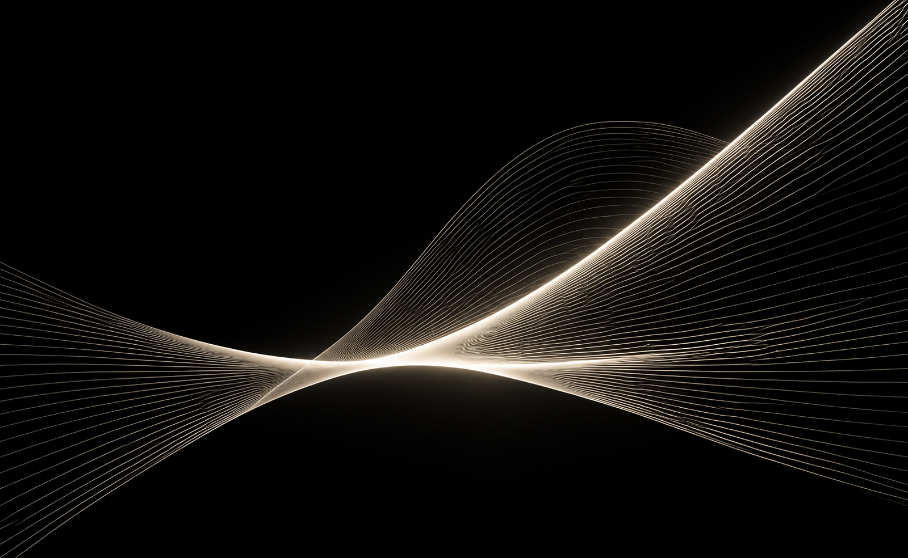

Световые
сценарии
DIALux / анализ / расчёты / архитектурная концепция
Светодизайнер / Санкт-Петербург


Для меня
светодизайн
— это работа
с восприятием
Меня особенно привлекает момент, когда свет перестаёт быть просто функцией и становится переживанием — влияет на состояние человека, направляет его внимание, меняет ощущение масштаба и глубины пространства.
Для этого важно понимать физику света, его взаимодействие с архитектурой, материалами и поверхностями — и использовать эти закономерности, чтобы создавать не просто освещение, а определённое состояние внутри пространства.
Dialux
TouchDesigner
НГУАДИ
Дизайн архитектурной среды
МАРШ
Светодизайн
От светового эксперимента и выставочного объекта — к архитектурной концепции и музейному пространству.
Работаю на пересечении света, пространства и генеративного изображения.
DIALux / анализ / расчёты / архитектурная концепция
TouchDesigner / real-time visual / интерактивное изображение
Сценография / маршруты / работа с материалом и восприятием
Два уровня консультации — от анализа существующего решения до проверки его светотехническим расчётом.
Выездная работа с уже смонтированным освещением — для музеев, ресторанов, ритейла и других общественных пространств.
Новое направление практики: физический свет соединяется с цифровым изображением, отражением и движением.

Есть пространство, выставка или идея?
Если у вас есть пространство, выставка или идея — расскажите о задаче. Я помогу найти световое решение, которое будет работать с архитектурой, содержанием и восприятием человека.